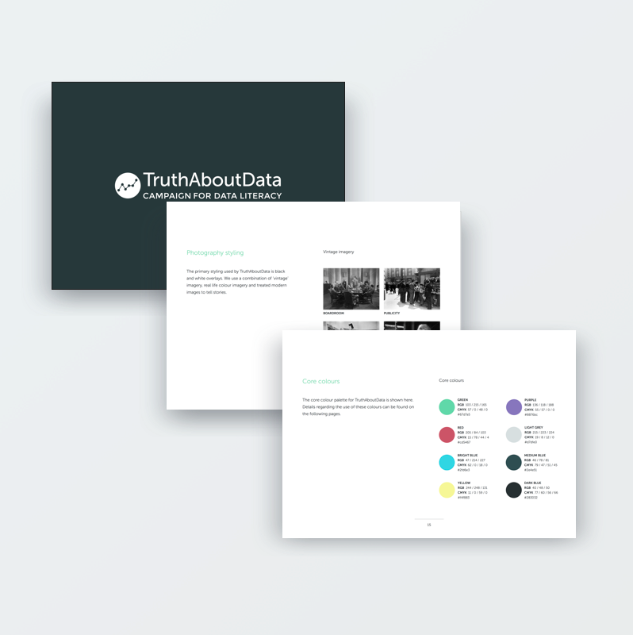
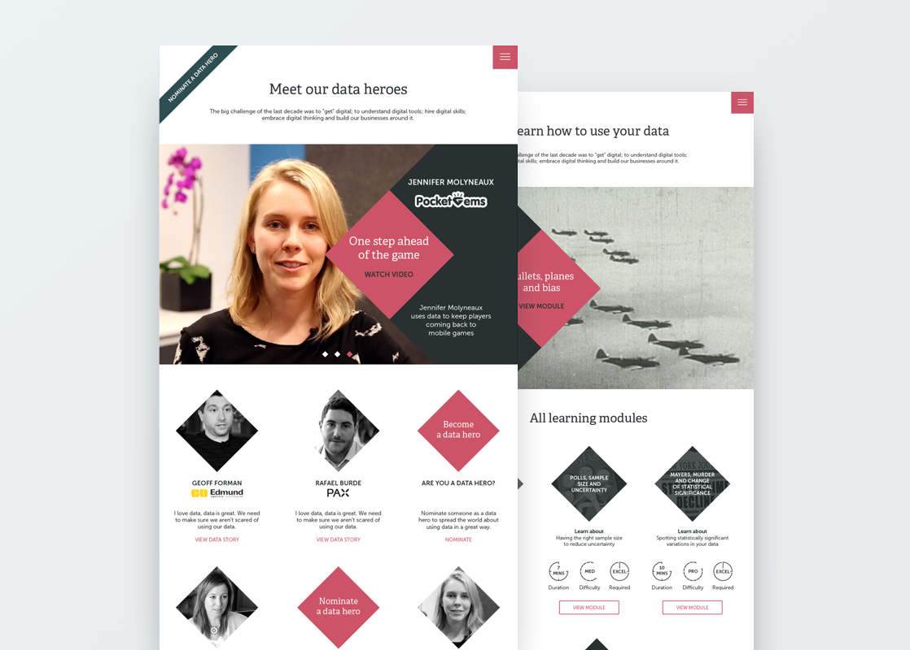

Visual Design
TRUTH ABOUT DATA
For years Qubit has been shouting about data. Whilst in the marketing team one campaign we ran was called Truth About Data. The goal of the campaign was to educate the industry on how to use data properly and effectively and celebrate those who already use doing so through a series of learning modules and 'data hero' videos.
WHAT
Brand design
Web design
Videography

Snapshot of the brand guidelines unifying existing campaign styles
BRAND GUIDELINES
When I joined the team there were various assets that had already been created - the interactive learning modules were underway and we had a promotional video, both produced by different agencies. My first task was to unify these and give them the same voice. I worked the agencies to bring the design language under one roof and created a set of guidelines to help with future asset creation. These evolved and expanded as we went through the campaign.

Landing page to build interest in the campaign before launching the full website
WEBSITE
My main task in the campaign was to create the house for all these different materials. We wanted it to have a technical but fresh feel tying in all the existing assets. We used various geometric shapes as references to data points.

Data hero and Learning module pages of the Truth About Data website